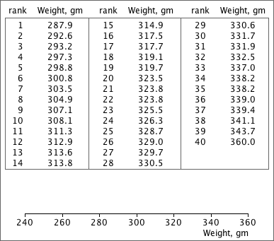

Basic box plot
The simplest form of box plot displays the median, quartiles and extremes of a data set.
The sorted list of values on the left should help you to evaluate the values that should be displayed in the box plot. Drag the vertical lines to show the correct box plot for the data.
A sample of 40 apples from a shipment was weighed. Draw a box plot of the data against the axes below the values. (Note that there are no outliers needing separate display.)
